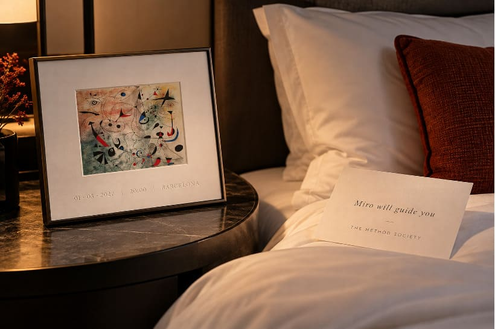
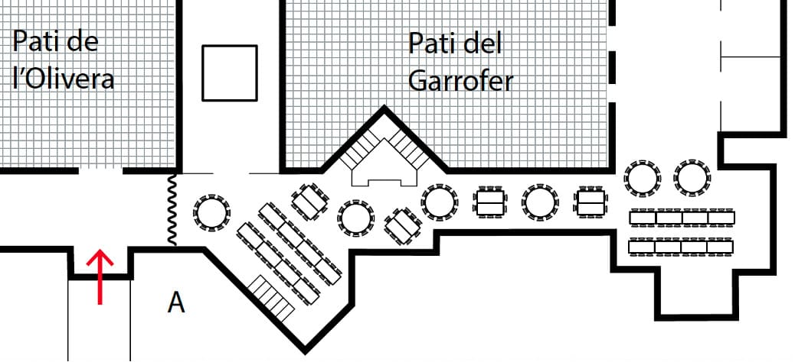
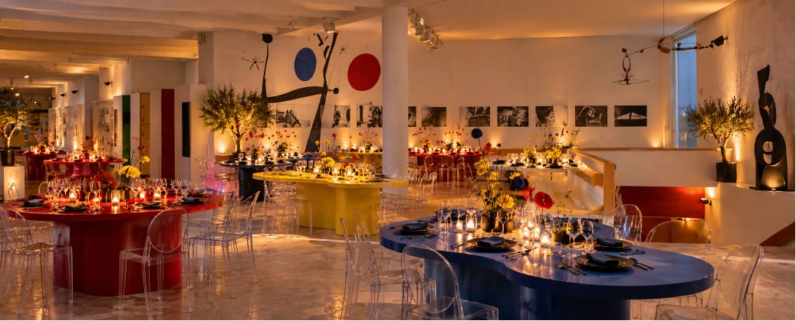
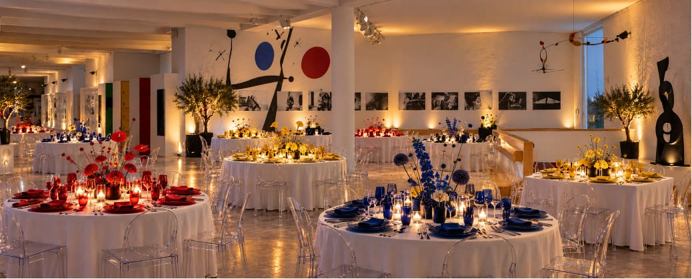
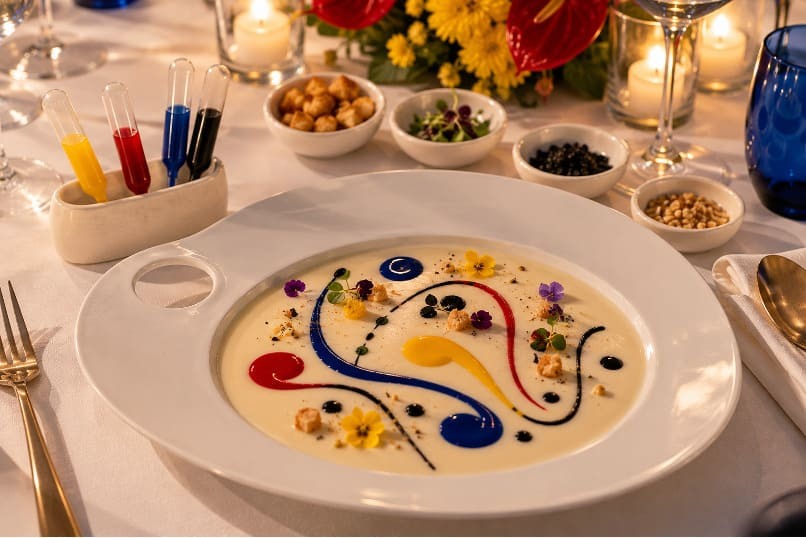
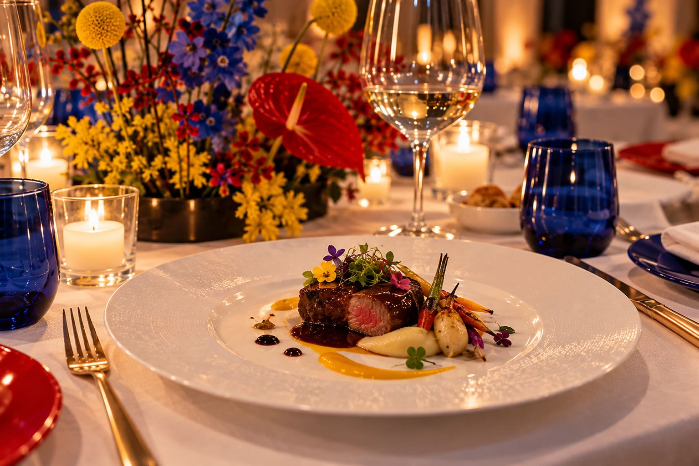
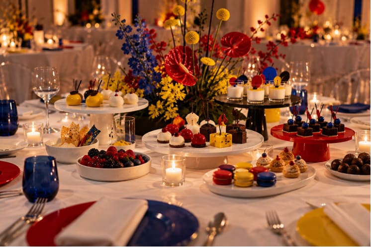

Proposal 02 · Art × future
FUNDACIÓ
JOAN MIRÓ
WHERE ART INSPIRED
WHAT'S NEXT.
Why this place
BUILT FOR ART.
READY FOR WHAT'S NEXT.
Una forma excepcional de descubrir Barcelona a través de uno de sus grandes referentes culturales.
La Fundació Joan Miró nos permite convertir el propio edificio, su arquitectura, sus patios y su colección en parte de la experiencia.
Miró rompió códigos, creó un lenguaje propio y se adelantó a su tiempo. Una figura que conecta de forma natural con THE METHOD y con quienes también están construyendo lo que viene después.


Concepto
BREAK THE
CODES.
Miró fue un artista adelantado a su tiempo. Rompió códigos, creó un lenguaje propio y aprendió a mirar el mundo desde una perspectiva completamente nueva.
Alguien así podría haber formado parte de THE METHOD. Por eso imaginamos que algunas de sus obras fueron reservadas en secreto para la sociedad, como fuente de inspiración para sus miembros.
Esta noche, ese legado vuelve a encontrarse con personas que también están tomando decisiones sobre lo que viene después.
Before the experience
MIRÓ WILL GUIDE YOU.

La experiencia comienza antes incluso de llegar a la Fundació.
Al entrar en su habitación, cada invitado encuentra una postal enmarcada con paspartú de una obra de Miró.
Sobre la cama, una única nota: MIRÓ WILL GUIDE YOU · THE METHOD SOCIETY.
Al observar la pieza con atención, descubrirán grabados en el paspartú una fecha, una hora y un lugar.
Arrival
JUST ANOTHER
MWC DINNER?
Los invitados llegan a la Fundació Joan Miró como si se tratara de una de las grandes cenas del MWC.
Una moqueta azul conduce hasta la entrada principal, donde el equipo de UAY les recibe y acompaña al interior.
Todo parece indicar que la noche será exactamente lo que esperaban. Pero THE METHOD todavía no se ha revelado.

Access
WELCOME TO
THE METHOD.

El acceso marca el momento en el que dejamos de ser invitados para convertirnos en miembros.
Tras validar su nombre, cada asistente es asignado a uno de los grupos para empezar la visita guiada.
Pero esto no será una visita convencional. Los miembros recorren el edificio y descubren cómo la historia de cada pieza se entrelaz con el storytelling de la noche.
Welcome drink · Pati Nord
DIFFERENT PERSPECTIVES.
ONE COMMUNITY.
Después de la visita guiada, todos los miembros vuelven a encontrarse.
Los diferentes grupos llegan al Pati Nord, que se convierte en el primer gran punto de encuentro común de THE METHOD.
Una barra de bebidas lateral, música ambiente y una puesta en escena mínima dejan todo el protagonismo al Pati Nord.

CEO moment + Aperitivo · Pati Nord
THE MEMBERS
HAVE BEEN CALLED.

Es el primer gran WOW de la noche: THE METHOD deja de ser un misterio y empieza a cobrar sentido.
En el Pati Nord, una intervención breve del CEO conecta el significado de THE METHOD con la visión de NTT DATA y reúne a todos alrededor de un mismo mensaje.
Al terminar comienza el aperitivo. Los camareros aparecen con una de las sorpresas de la noche: cada miembro recibe sus bocados sobre una paleta de pintor.
Miró fue, es y seguirá siendo una fuente de inspiración para THE METHOD. Esta noche, también inspira a sus chefs.
UAY MOMENT · Vestíbulo
YOU'VE SEEN THE ART.
NOW EXPERIENCE IT.
Después del aperitivo, los miembros vuelven sobre sus propios pasos y regresan al interior de la Fundació. El Pipe & Drape blanco que ocultaba el vestíbulo ha desaparecido. La cena estaba allí desde el principio, escondida a plena vista.
El espacio no ha cambiado. Lo que ha cambiado es lo que se les permite descubrir.

Dinner set-up
1 INSPIRATION.
2 INTERPRETATIONS.
La transformación del vestíbulo puede desarrollarse desde dos aproximaciones diferentes, ambas inspiradas en el universo visual de Miró y adaptadas a la arquitectura del espacio.

Opción 01
THE TABLE AS ART
La propia mesa se convierte en parte de la escenografía. Diferentes geometrías —orgánicas, curvas, circulares o rectangulares— se combinan con los colores esenciales del universo de Miró: rojo, azul, amarillo y negro.
Cada mesa funciona como una pieza independiente dentro de una gran composición artística. El color invade la propia superficie mientras las sillas transparentes aligeran visualmente el montaje y ceden todo el protagonismo a las formas y al color.
Una interpretación más conceptual, atrevida y experiencial.

Opción 02
THE COLOUR CODE
Una puesta en escena más clásica de gala: mesas redondas y cuadradas vestidas de blanco, combinadas con sillas transparentes para mantener una estética ligera y contemporánea.
Cada mesa adopta un único código cromático —rojo, azul, amarillo o negro— que se traslada al conjunto del menaje, la cristalería, las servilletas y la decoración.
Una interpretación más elegante, sutil y sofisticada.
Gala Dinner · Vestíbulo
THREE ACTS.
ONE EXPERIENCE.
La experiencia de THE METHOD continúa también en la mesa. El menú se convierte en un recorrido en tres actos inspirado no solo en el universo visual de Miró, sino también en su manera de experimentar, jugar y crear.

Primer acto
CREATE YOUR MIRÓ
El primer plato llega aparentemente inacabado. Una crema se convierte en un lienzo en blanco y, junto a ella, cada miembro recibe diferentes pipetas con salsas en los colores característicos de Miró, además de pequeños toppings, texturas y elementos comestibles.
No existen instrucciones exactas ni una composición que reproducir. Cada miembro decide cómo intervenir su plato antes de probarlo.
200 invitados. Un mismo punto de partida. Ningún resultado igual a otro.

Segundo acto
ENJOY THE MOMENT
Después del juego llega una pausa. El plato principal abandona la interacción para recuperar el ritual de una gran cena: una elaboración cuidada, elegante y servida de manera impecable.
Es un momento más sereno para disfrutar de la cocina, conversar y dejar que la experiencia respire.
Porque una experiencia también necesita momentos en los que simplemente disfrutar.

Tercer acto
THE SHARED TABLE
El postre vuelve a romper el formato tradicional. Un pequeño universo de postres aparece en el centro de cada mesa: diferentes piezas, sabores, formas, colores y texturas que los invitados pueden descubrir libremente.
La sobremesa se vuelve más dinámica y social: elegir, probar, recomendar, compartir y conversar.